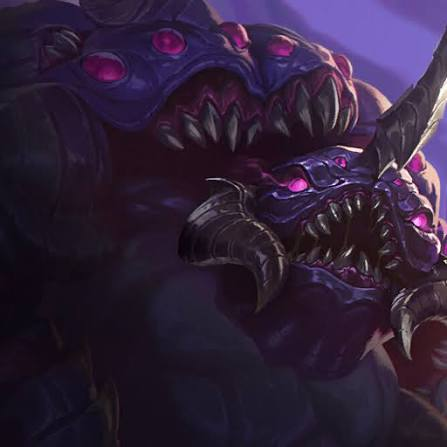
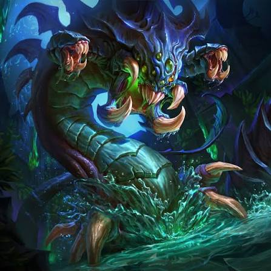
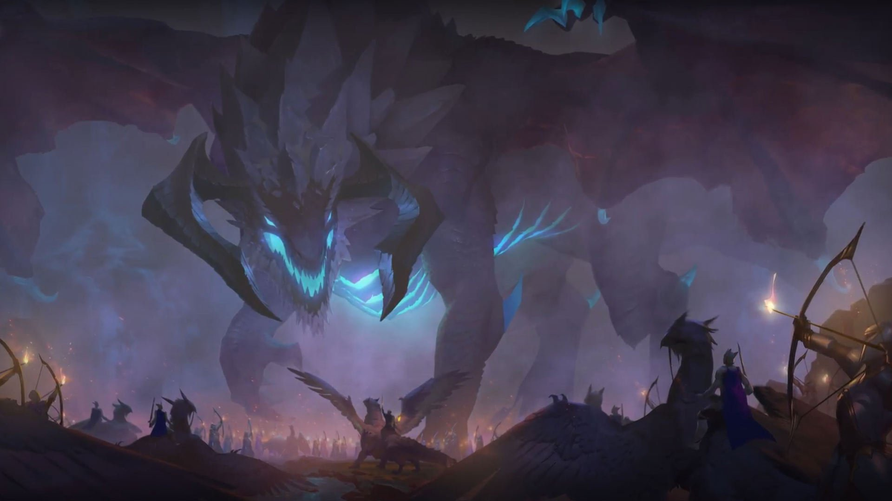
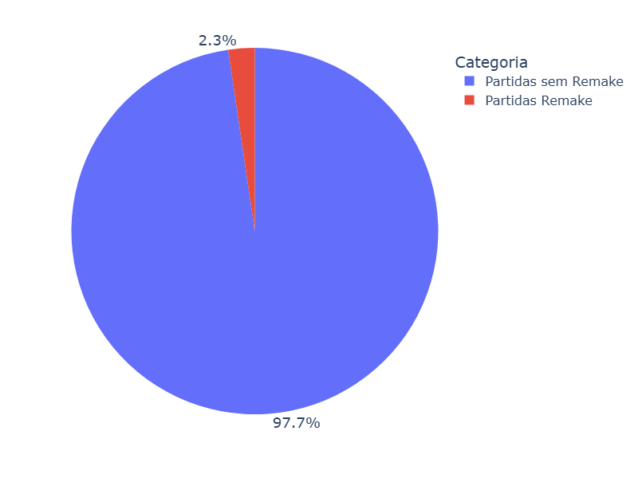
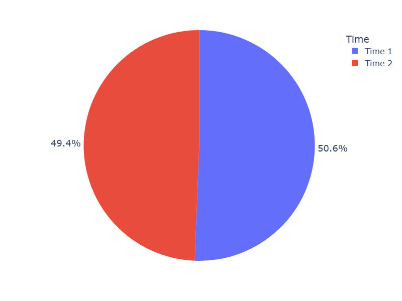
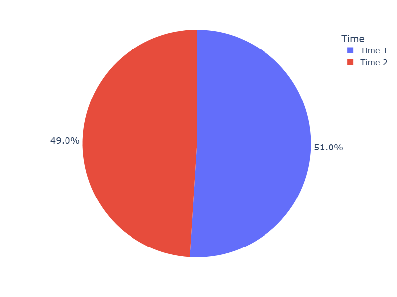
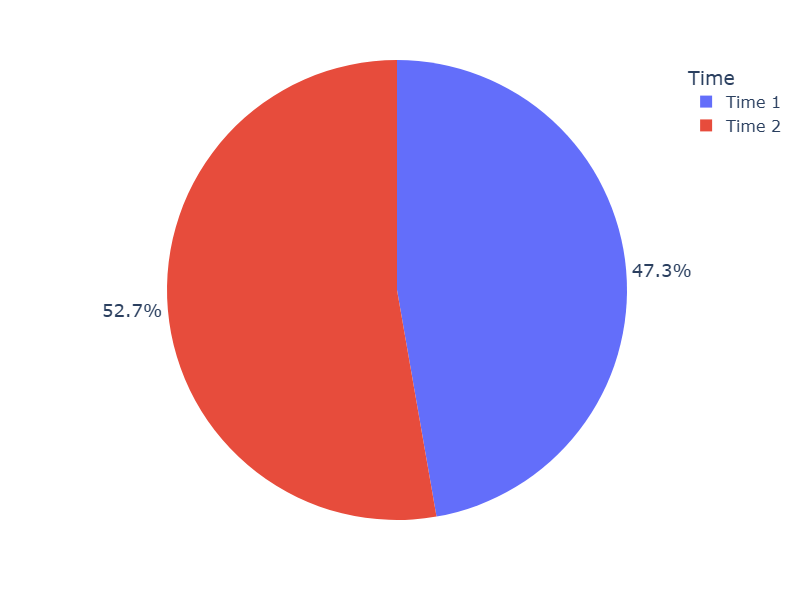
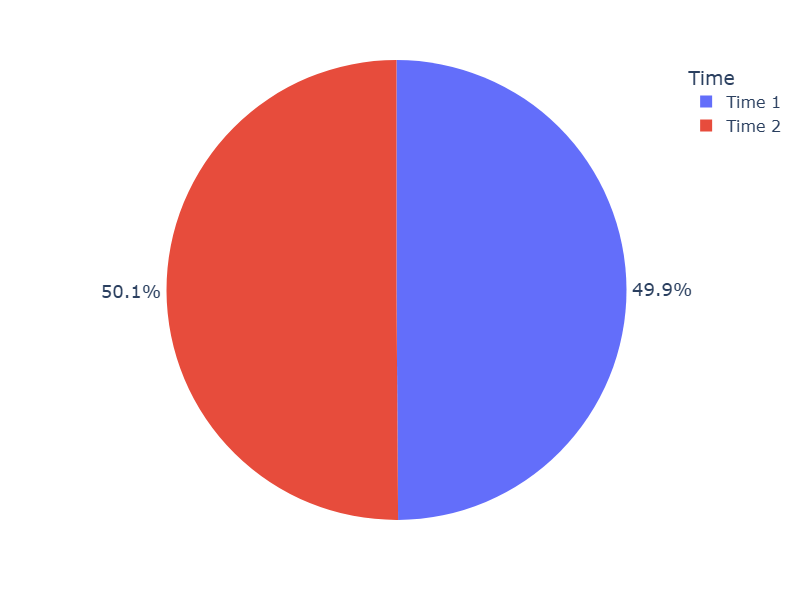
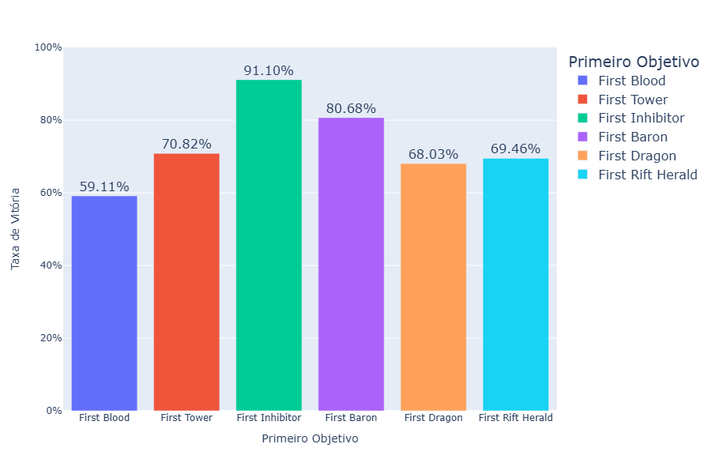

League of Legends (LoL) é um jogo competitivo lançado em 2009 pela Riot Games. No estilo MOBA, duas equipes se enfrentam com o objetivo de destruir a base adversária. O jogo se tornou um dos principais nomes dos eSports, conquistando milhões de jogadores com suas partidas ranqueadas e campeonatos profissionais.
O desempenho das equipes depende de diversos fatores, como trabalho em equipe, estratégias e conquista de objetivos. Entre os acontecimentos importantes estão o First Blood (primeiro abate), a destruição de torres e a conquista de objetivos neutros.



Esta pesquisa apresenta uma análise de mais de 50 mil partidas ranqueadas do servidor europeu, com o objetivo de identificar a relação entre a conquista do First Blood, o controle de objetivos neutros, como Dragões, Barão Nashor e Arauto do Vale, e a duração das partidas com o resultado final. A partir da visualização e interpretação dos dados, busca-se comparar a frequência desses eventos entre partidas vencidas e perdidas, investigando quais apresentam maior associação com a vitória. Além disso, pretende-se compreender como a obtenção de vantagens durante as fases inicial e intermediária do jogo pode estar relacionada ao desempenho das equipes e à sua capacidade de alcançar a vitória. Dessa forma, a análise busca contribuir para uma melhor compreensão dos fatores que influenciam os resultados das partidas competitivas de League of Legends.
1. Porcentagem de partidas com Remake (recriação)
As partidas recriadas (Remake) são aquelas encerradas nos primeiros minutos de jogo, permitindo que as equipes iniciem uma nova partida sem sofrer consequências na classificação. Para identificá-las no conjunto de dados, foram consideradas as partidas com duração de até 240 segundos, período que contempla o processo de votação para recriação.
Porcentagem de partidas com recriação

Fonte: DATASNAEK
Apenas 2,32% das partidas analisadas terminaram em recriação. Esse percentual indica que o evento possui baixa frequência e, portanto, não representa uma ocorrência significativa no conjunto de dados. Essas partidas foram desconsideradas nas demais análises, pois não apresentam desenvolvimento suficiente para avaliar os objetivos e acontecimentos estratégicos do jogo.
2. Taxa de vitória
Esta análise compara a distribuição das vitórias entre as equipes dos lados azul e vermelho do mapa. Essa comparação permite verificar se existe alguma vantagem significativa associada ao lado em que cada equipe inicia a partida, considerando que pequenas diferenças na disposição do mapa podem proporcionar vantagens estratégicas.
Porcentagem de partidas com quit player

Fonte: DATASNAEK
Os resultados demonstram um equilíbrio entre as taxas de vitória das duas equipes, indicando que nenhum dos lados apresenta uma vantagem expressiva sobre o outro. Essa proximidade sugere que as diferenças estratégicas entre as metades do mapa não são suficientes para provocar um desbalanceamento significativo nos resultados das partidas analisadas.
3. Taxa de First Blood (primeiro abate)
O First Blood representa a primeira eliminação de uma partida e acontece apenas uma vez. Diferentemente de um abate comum, que concede 300 unidades de ouro, o primeiro abate concede 400, proporcionando uma pequena vantagem econômica ao jogador responsável pela eliminação. Esse recurso adicional pode ser utilizado na compra de itens, contribuindo para o fortalecimento do personagem durante a partida.
Gráfico de taxa de First Blood (primeiro abate) por time
Fonte: DATASNAEK
Observa-se que o time 1 conquistou o First Blood com maior frequência em relação ao time 2. Essa vantagem inicial pode contribuir para o desenvolvimento das rotas individuais, especialmente nas disputas entre os jogadores, permitindo uma aquisição antecipada de recursos e itens. Entretanto, a conquista do primeiro abate não garante a vitória, sendo necessário considerar outros acontecimentos ao longo da partida.
4. Taxa de First Tower (primeira torre destruída)
A primeira torre destruída representa um importante avanço territorial para a equipe responsável. Além dos recursos obtidos com sua destruição, a ausência dessa estrutura permite que as tropas avancem mais livremente pela rota, aumentando a pressão sobre o território adversário e facilitando o controle de regiões estratégicas do mapa.
Gráfico de taxa de primeira torre destruída por time
Fonte: DATASNAEK
Assim como observado na análise do First Blood, o time 1 apresentou uma taxa superior de conquista do primeiro objetivo. Essa vantagem pode estar relacionada ao benefício econômico obtido anteriormente e à maior pressão exercida sobre as rotas adversárias. Dessa forma, a equipe que destrói a primeira torre pode ampliar seu domínio territorial e criar oportunidades para conquistar outros objetivos.
5. Taxa de First Inhibitor (primeiro inibidor)
O inibidor é uma das estruturas mais importantes da base adversária. Quando destruído, permite que a equipe responsável passe a gerar Super Tropas naquela rota, unidades mais fortes que aumentam a pressão sobre as defesas inimigas. Embora o inibidor seja reconstruído automaticamente após cinco minutos, sua destruição pode criar oportunidades importantes para avançar sobre a base e alcançar o Nexus, estrutura cuja destruição determina a vitória da partida.
Gráfico de taxa de primeiro inibidor por time

Fonte: DATASNAEK
Os resultados demonstram que o time 1 também apresentou uma taxa superior de destruição do primeiro inibidor. Esse resultado acompanha a vantagem observada nas conquistas de First Blood e First Tower, sugerindo uma relação entre o domínio inicial da partida e a capacidade de avançar sobre a base adversária. A presença de Super Tropas aumenta a necessidade de defesa por parte do time inimigo, permitindo que a equipe em vantagem aproveite essa pressão para disputar outros objetivos pelo mapa.
6. Taxa de First Baron (primeiro Barão)
O Barão Nashor é um dos principais monstros épicos do jogo. Sua eliminação concede à equipe um aprimoramento temporário que fortalece as tropas das rotas, facilitando o avanço sobre as estruturas adversárias. Por conta desse benefício, sua conquista representa uma importante vantagem estratégica, principalmente durante as fases intermediária e final da partida.
Gráfico de taxa de primeiro Barão conquistado por time

Fonte: DATASNAEK
Diferentemente dos resultados anteriores, o time 2 apresentou uma taxa superior de conquista do primeiro Barão. Essa diferença pode estar relacionada à localização do objetivo no mapa, que favorece determinadas disputas dependendo do lado em que cada equipe está posicionada. Além disso, fatores como controle de visão, posicionamento dos jogadores e possibilidade de roubar o objetivo podem interferir diretamente no resultado dessas disputas.
7. Taxa de First Dragon (primeiro Dragão)
Os Dragões Elementais são monstros épicos que concedem bônus permanentes aos jogadores da equipe responsável por derrotá-los. Esses benefícios variam conforme o elemento do Dragão, podendo aumentar atributos como dano e velocidade de movimento. Para conquistar esse objetivo com segurança, é importante controlar a região ao redor do covil e garantir pressão nas rotas próximas.
Gráfico de taxa de primeiro dragão conquistado por time

Fonte: DATASNAEK
O gráfico demonstra qual equipe conquistou o primeiro Dragão com maior frequência. O time 2 apresentou uma taxa ligeiramente superior, mesmo com a diferença observada na conquista do primeiro Barão. Essa variação pode estar relacionada à disposição dos objetivos no mapa, que proporciona diferentes condições de disputa para cada equipe. Ainda assim, o resultado sugere que o time 2 conseguiu estabelecer um controle eficiente da região do Dragão, aumentando suas oportunidades de conquista.
8. Taxa de First Rift Herald (primeiro Arauto do Vale)
O Arauto do Vale é um objetivo localizado na mesma região do Barão Nashor, disponível durante uma parte limitada da partida. Ao derrotá-lo, a equipe recebe um item que permite invocar a criatura em uma rota, onde ela avança contra as tropas e estruturas adversárias, causando grande quantidade de dano às torres.
Gráfico de taxa de primeiro Arauto do Vale conquistado por time
Fonte: DATASNAEK
Apesar de estar localizado na mesma região do Barão, o Arauto apresentou um resultado diferente, com maior frequência de conquista pelo time 1. Uma possível explicação está na diferença de prioridade atribuída aos objetivos: como o Barão oferece benefícios mais significativos para a equipe, sua disputa tende a receber maior atenção. Além disso, a vantagem apresentada pelo time 1 nas conquistas de First Blood e First Tower pode ter contribuído para um controle territorial mais eficiente, facilitando a obtenção do Arauto.
9. Influência dos primeiros objetivos na vitória
Esta análise compara a conquista dos primeiros objetivos com a taxa de vitória das equipes, buscando identificar quais acontecimentos apresentam maior associação com o resultado final das partidas. Para isso, foram observadas as porcentagens de vitória das equipes responsáveis por conquistar cada objetivo primeiro.
Gráfico de influência dos primeiros objetivos na vitória

Fonte: DATASNAEK
Os resultados demonstram diferenças importantes entre os objetivos analisados. As equipes que conquistaram o First Blood apresentaram uma taxa de vitória de 59%, enquanto aquelas que destruíram a primeira torre alcançaram 71%. Já a conquista do primeiro inibidor apresentou o maior percentual, com 91% de vitórias, evidenciando uma forte associação entre esse objetivo e o resultado final da partida.
Os demais objetivos também apresentaram taxas expressivas. A conquista do primeiro Barão esteve associada a uma taxa de vitória de 80%, enquanto o primeiro Dragão e o primeiro Arauto apresentaram percentuais de 68% e 69%, respectivamente. Esses resultados demonstram que diferentes objetivos podem proporcionar vantagens relevantes, seja pelo fortalecimento dos personagens, pela pressão territorial ou pela destruição das estruturas adversárias.
Conclusão
De maneira geral, o primeiro inibidor foi o objetivo que apresentou a maior associação com a vitória, seguido pelo Barão Nashor e pela primeira torre destruída. Isso indica que, embora as conquistas iniciais possam contribuir para o desenvolvimento de uma vantagem, o domínio territorial e o avanço sobre a base adversária estão ainda mais relacionados ao resultado positivo das partidas analisadas.
ACTIVEPLAYER. ActivePlayer.io. Acesso em: 17 abr. 2026.
ANÁLISE PREDITIVA EM PARTIDAS DE LEAGUE OF LEGENDS. Aplicação de regressão logística para prever a vitória por jogador, 2023. Acesso em: 17 abr. 2026.
COLLECTIVE INTELLIGENCE OUTPERFORMS INDIVIDUAL TALENT. A case study in League of Legends, 2025. Acesso em: 17 abr. 2026.
DATASNAEK. League of Legends ranked games (dataset e dicionário do dataset). Acesso em: 17 abr. 2026.
FERREIRA, Amaury Florentino. Mineração de dados na base de dados do jogo League of Legends: construção de modelos preditivos de vitórias e derrotas de uma equipe. 2022. Trabalho de Conclusão de Curso (Graduação) – Pontifícia Universidade Católica de Goiás, Goiânia, 2022. Acesso em: 17 abr. 2026.
LEAGUEOFGRAPHS. League of Graphs. Acesso em: 18 abr. 2026.
LEAGUE OF LEGENDS. An application of classification algorithms to verify the prediction importance of main in-game variables. In: SIMPÓSIO BRASILEIRO DE GAMES E ENTRETENIMENTO DIGITAL (SBGAMES). Acesso em: 17 abr. 2026.
NASCIMENTO JUNIOR, Fernando Felix do. Caracterização de perfis de comportamento de equipes em League of Legends. 2018. Dissertação (Pós-Graduação em Ciência da Computação) – Universidade Federal de Campina Grande, Campina Grande, 2018. Acesso em: 17 abr. 2026.
THE AMEBAS. Código PCG para análise de dados de partidas de League of Legends. Google Colaboratory, 2026. Material desenvolvido para o Projeto Curricular de Graduação (PCG). Acesso em: 23 de mai. 2026.